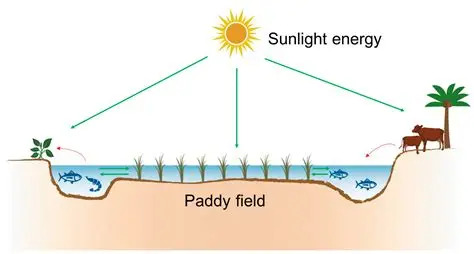

Rice-Fish Integration
The "Golden Harvest" Model: Double the yield from the same body of water.
1. Site Feasibility & Pre-requisites
🌱 Soil Requirement
Heavy Clay / Loam.
Water retention is the most critical factor. The soil must hold water for 3-4 months without
seepage, otherwise, fish will be stressed by fluctuating water levels.
🧪 History Check
Chemical Free.
Ensure the land has not been sprayed with heavy pesticides recently. Residual toxicity in the
soil can be lethal to fish fry.
📏 Water Depth
Min: 10-15 cm.
While rice loves water, fish need slightly more depth to swim freely. You must be able to
maintain at least 15cm depth in the main field.
2. Infrastructure & Layout
The "Refuge Pond" is the safety net for your fish when the paddy water dries up.
🚧 Construction Specs
- Refuge Pond: Dedicate 10% of the land area to a deeper pond (1m depth) at one end.
- Perimeter Trenches: Dig wide channels (1m wide, 0.5m deep) around the field edges.
- Screens: Install mesh screens at water inlets and outlets to prevent fish from escaping.
3. The Symbiosis
How do they help each other? It is a biological exchange.
Excretes Ammonia & Nitrogen
Fish swim & aerate soil
Absorb Nitrogen directly
Fish eat stem borers & larvae
4. Operational Calendar
Synchronization is key. Fish must be released only after rice plants are strong.
Plant rice seedlings. Keep water shallow (5cm) to encourage rooting.
Increase water level to 15cm. Release fish fingerlings (Rohu, Catla). They will graze on algae and weeds.
Daily maintenance. Ensure water screens are intact. Fish stir the soil, releasing nutrients for rice.
Slowly drain the main field. Fish will naturally migrate to the deeper "Refuge Pond" via trenches.
Harvest the rice crop. Fish can be harvested now or kept in the refuge pond to grow larger.
5. Risks & Solutions
⚠️ DANGER: PESTICIDES
Zero Tolerance. Fish are extremely sensitive to agricultural chemicals. Even a small amount of run-off from a neighbor's field can kill your entire stock.
| Problem | Solution |
|---|---|
| Fish escaping | Heavy rain can overflow bunds. Install double-layer mesh screens. |
| Predators (Birds/Snakes) | Use bird netting over the refuge pond area. |
6. Economics
💰 Double Income
- Rice Yield: Increases by 10-15% due to better soil aeration and organic fertilization.
- Protein Income: Fish sales provide a substantial bonus income at the end of the season.
📉 Lower Costs
- Weeding: Fish eat weeds, reducing labor costs.
- Pesticide: Fish eat pests, eliminating chemical costs.
- Fertilizer: Fish waste replaces Urea.